تابع فعاليات هذا الشهر
هذه الروابط تتحدث مع كل بناء وتعرض الفعاليات القادمة والجارية لهذا السياق فقط.
فعاليات هذا الشهر في السعودية من EventLive، مرتبة من الأقرب زمنيا مع روابط التفاصيل والتقويم والمصدر.
هذه الروابط تتحدث مع كل بناء وتعرض الفعاليات القادمة والجارية لهذا السياق فقط.
برنامج أو مبادرة ثقافية رسمية من تقويم وزارة الثقافة. المدة طويلة لذلك تحفظ كدليل مصدر ولا تنشر تلقائياً كفعالية لحظية. Skill Development Initiative ضمن ثقافة وفنون في الرياض. تبدأ الفعالية ١٤/٠٧/٢٠٢١، ٣:٠٠ ص وتنتهي ٣١/١٢/٢٠٣٠، ٣:٠٠ ص حسب البيانات المتاحة. تعرض الصفحة وقت الفعالية وموقعها ومصدرها وروابط التقويم والاتجاهات عند توفرها. المصدر: Ministry of Culture Commission Calendars.
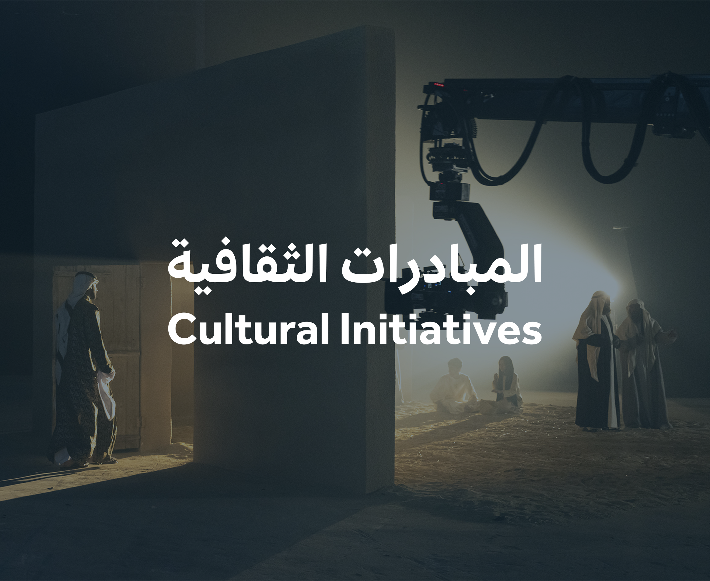
برنامج أو مبادرة ثقافية رسمية من تقويم وزارة الثقافة. المدة طويلة لذلك تحفظ كدليل مصدر ولا تنشر تلقائياً كفعالية لحظية. Skill Development Initiative ضمن ثقافة وفنون في الرياض. تبدأ الفعالية ١٤/٠٧/٢٠٢١، ٣:٠٠ ص وتنتهي ٣١/١٢/٢٠٣٠، ٣:٠٠ ص حسب البيانات المتاحة. تعرض الصفحة وقت الفعالية وموقعها ومصدرها وروابط التقويم والاتجاهات عند توفرها. المصدر: Ministry of Culture Commission Calendars.
تفاصيل الحضور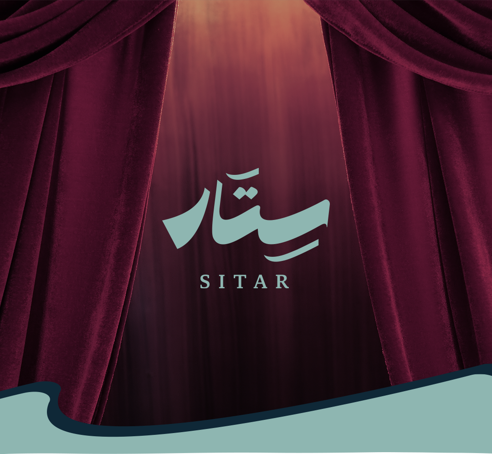
برنامج أو مبادرة ثقافية رسمية من تقويم وزارة الثقافة. المدة طويلة لذلك تحفظ كدليل مصدر ولا تنشر تلقائياً كفعالية لحظية. SITAR ضمن ثقافة وفنون في الرياض. تبدأ الفعالية ٢١/٠٩/٢٠٢٢، ٣:٠٠ ص وتنتهي ٣١/١٢/٢٠٣٠، ٣:٠٠ ص حسب البيانات المتاحة. تعرض الصفحة وقت الفعالية وموقعها ومصدرها وروابط التقويم والاتجاهات عند توفرها. المصدر: Ministry of Culture Commission Calendars.
تفاصيل الحضور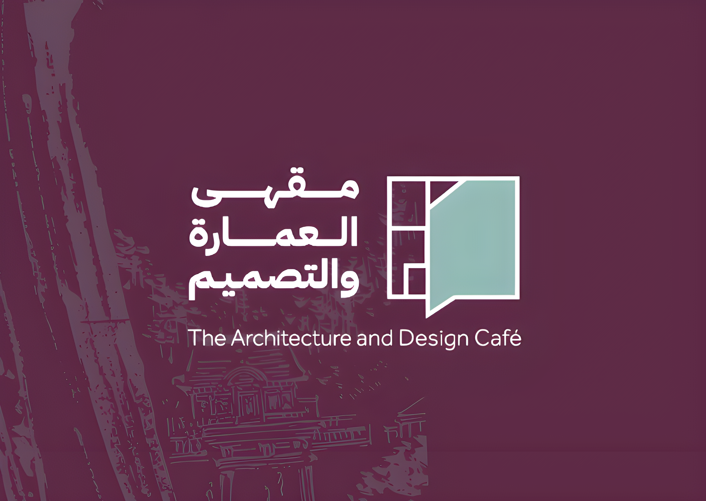
برنامج أو مبادرة ثقافية رسمية من تقويم وزارة الثقافة. المدة طويلة لذلك تحفظ كدليل مصدر ولا تنشر تلقائياً كفعالية لحظية. The Architecture and Design Café ضمن ثقافة وفنون في السعودية. تبدأ الفعالية ٢٧/٠٤/٢٠٢٤، ١٢:٠٠ ص وتنتهي ٢٧/٠٩/٢٠٢٦، ١٢:٠٠ ص حسب البيانات المتاحة. تعرض الصفحة وقت الفعالية وموقعها ومصدرها وروابط التقويم والاتجاهات عند توفرها. المصدر: Ministry of Culture Commission Calendars.
تفاصيل الحضور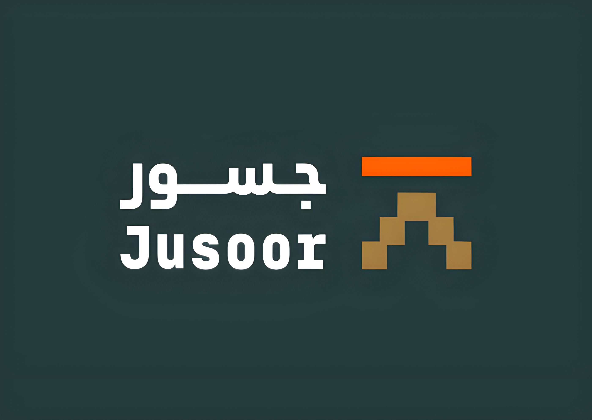
برنامج أو مبادرة ثقافية رسمية من تقويم وزارة الثقافة. المدة طويلة لذلك تحفظ كدليل مصدر ولا تنشر تلقائياً كفعالية لحظية. Jusoor Program ضمن ثقافة وفنون في السعودية. تبدأ الفعالية ١٨/٠٨/٢٠٢٤، ١٢:٠٠ ص وتنتهي ١٨/٠٨/٢٠٢٦، ١٢:٠٠ ص حسب البيانات المتاحة. تعرض الصفحة وقت الفعالية وموقعها ومصدرها وروابط التقويم والاتجاهات عند توفرها. المصدر: Ministry of Culture Commission Calendars.
تفاصيل الحضور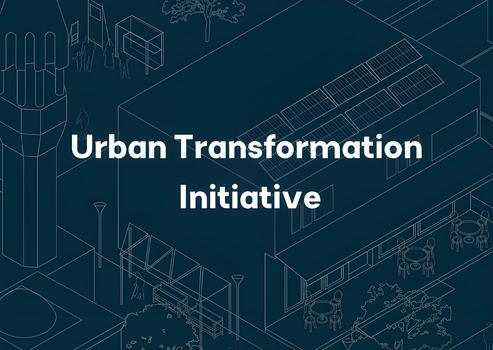
برنامج أو مبادرة ثقافية رسمية من تقويم وزارة الثقافة. المدة طويلة لذلك تحفظ كدليل مصدر ولا تنشر تلقائياً كفعالية لحظية. Urban transformation Initiative ضمن ثقافة وفنون في السعودية. تبدأ الفعالية ٣١/١٠/٢٠٢٤، ١٢:٠٠ ص وتنتهي ٠١/١١/٢٠٢٦، ١٢:٠٠ ص حسب البيانات المتاحة. تعرض الصفحة وقت الفعالية وموقعها ومصدرها وروابط التقويم والاتجاهات عند توفرها. المصدر: Ministry of Culture Commission Calendars.
تفاصيل الحضور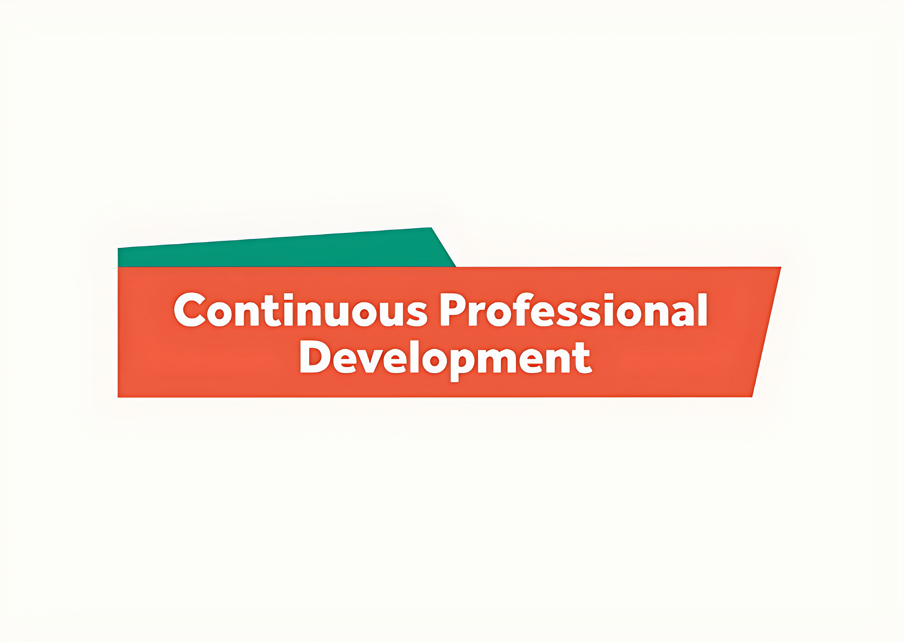
برنامج أو مبادرة ثقافية رسمية من تقويم وزارة الثقافة. المدة طويلة لذلك تحفظ كدليل مصدر ولا تنشر تلقائياً كفعالية لحظية. The Continuing Professional Development Initiative ضمن ثقافة وفنون في السعودية. تبدأ الفعالية ١٦/١١/٢٠٢٤، ١٢:٠٠ ص وتنتهي ١٠/١٠/٢٠٢٦، ١٢:٠٠ ص حسب البيانات المتاحة. تعرض الصفحة وقت الفعالية وموقعها ومصدرها وروابط التقويم والاتجاهات عند توفرها. المصدر: Ministry of Culture Commission Calendars.
تفاصيل الحضور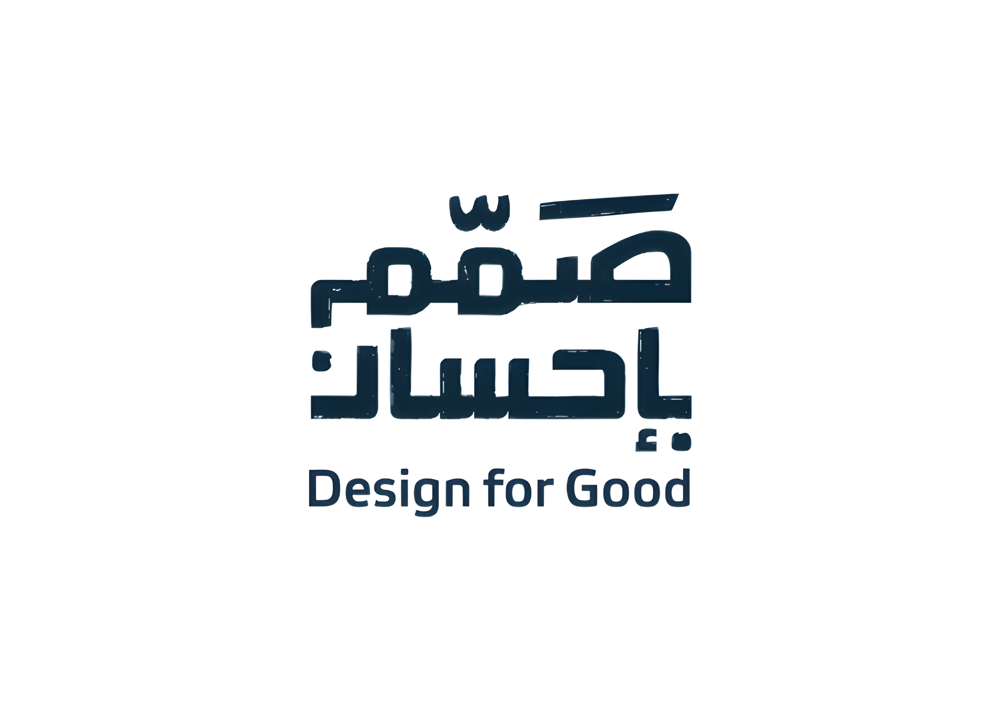
برنامج أو مبادرة ثقافية رسمية من تقويم وزارة الثقافة. المدة طويلة لذلك تحفظ كدليل مصدر ولا تنشر تلقائياً كفعالية لحظية. Design for Good Initiative ضمن ثقافة وفنون في السعودية. تبدأ الفعالية ٠٥/١٢/٢٠٢٤، ١٢:٠٠ ص وتنتهي ١٤/١١/٢٠٢٦، ١٢:٠٠ ص حسب البيانات المتاحة. تعرض الصفحة وقت الفعالية وموقعها ومصدرها وروابط التقويم والاتجاهات عند توفرها. المصدر: Ministry of Culture Commission Calendars.
تفاصيل الحضوربرنامج أو مبادرة ثقافية رسمية من تقويم وزارة الثقافة. المدة طويلة لذلك تحفظ كدليل مصدر ولا تنشر تلقائياً كفعالية لحظية. The Saudi Music Hub ضمن ثقافة وفنون في السعودية. تبدأ الفعالية ٠١/٠١/٢٠٢٥، ١٢:٠٠ ص وتنتهي ٠٣/٠٤/٢٠٢٧، ١٢:٠٠ ص حسب البيانات المتاحة. تعرض الصفحة وقت الفعالية وموقعها ومصدرها وروابط التقويم والاتجاهات عند توفرها. المصدر: Ministry of Culture Commission Calendars.
تفاصيل الحضور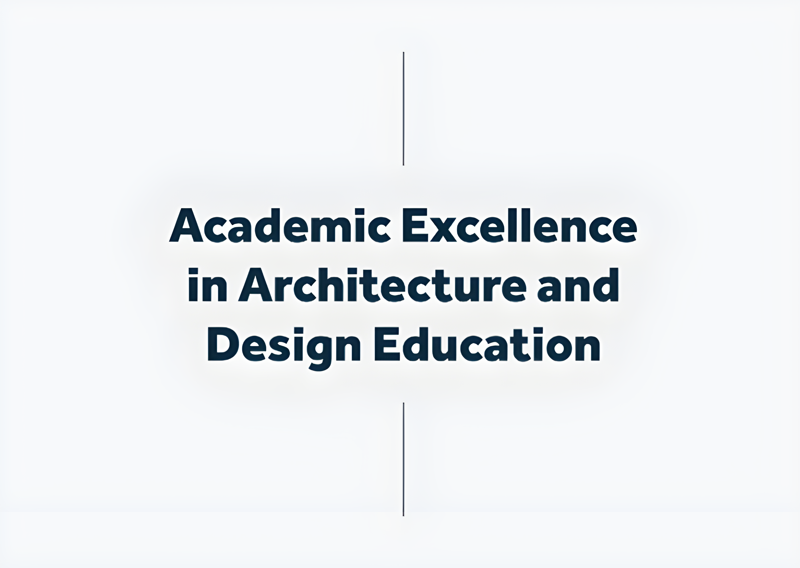
برنامج أو مبادرة ثقافية رسمية من تقويم وزارة الثقافة. المدة طويلة لذلك تحفظ كدليل مصدر ولا تنشر تلقائياً كفعالية لحظية. Academic Excellence in Architecture and Design Education ضمن ثقافة وفنون في السعودية. تبدأ الفعالية ٠٩/٠٣/٢٠٢٥، ١٢:٠٠ ص وتنتهي ٠٩/٠٩/٢٠٢٦، ١٢:٠٠ ص حسب البيانات المتاحة. تعرض الصفحة وقت الفعالية وموقعها ومصدرها وروابط التقويم والاتجاهات عند توفرها. المصدر: Ministry of Culture Commission Calendars.
تفاصيل الحضور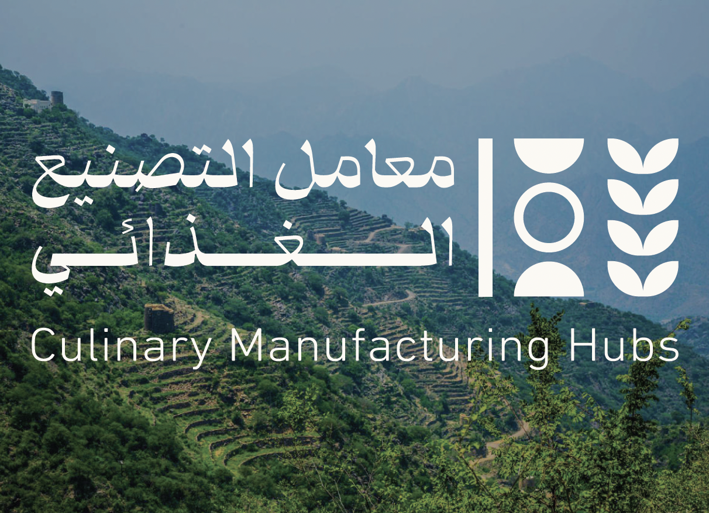
برنامج أو مبادرة ثقافية رسمية من تقويم وزارة الثقافة. المدة طويلة لذلك تحفظ كدليل مصدر ولا تنشر تلقائياً كفعالية لحظية. Culinary Manufacturing Hubs ضمن ثقافة وفنون في السعودية. تبدأ الفعالية ١١/٠٨/٢٠٢٥، ١٢:٠٠ ص وتنتهي ٣١/١٢/٢٠٢٩، ١٢:٠٠ ص حسب البيانات المتاحة. تعرض الصفحة وقت الفعالية وموقعها ومصدرها وروابط التقويم والاتجاهات عند توفرها. المصدر: Ministry of Culture Commission Calendars.
تفاصيل الحضورAt Boulevard City, step into the eerie world of Poppy Playtime, where an abandoned toy factory hides sinister secrets. This immersive hide-and-seek horror challenge keeps you on edge as every shadow and corner could be a safe haven—or a trap. Combining suspense, mystery, and thrilling interactive gameplay, Poppy Playtime delivers one of most unforgettable and spine-tingling adventures. Book Now
تفاصيل الحضور
Boulevard City is one of Riyadh Season’s most iconic entertainment hubs, offering a vibrant mix of attractions, from the dazzling dancing fountain to upscale dining, shopping, theaters, and immersive experiences for all ages. Visitors can explore OLULOU, where a towering dinosaur skeleton offers the perfect photo op, and let kids dive into four imaginative zones at PLAY-TOPIA. For thrill-seekers, Poppy Playtime delivers suspense inside an abandoned toy factory, A Lot Like Life challenges your bravery in a zombie outbreak, and The Conjuring opens October 15 with spine-chilling scenes from the haunted universe of Annabelle. Families can brave the haunted farm at Zeela House, while pop culture lovers enjoy FUNKO (from Nov 15), with giant figures and collectibles, and gamers embark on a real-world adventure inside MINECRAFT (also from Nov 15). Launching December 18, Flying Over Saudi offers a groundbreaking 5D flight experience that takes you on a 7-minute immersive ride above Saudi Arabia’s most iconic landmarks.
تفاصيل الحضور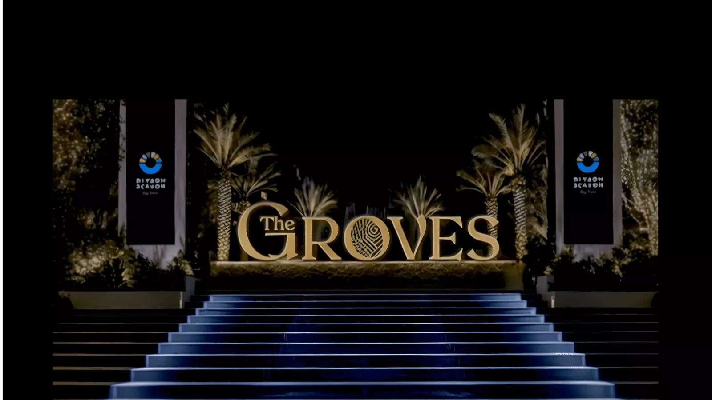
The Groves offers a multi-sensory experience that transforms with each season. Every chapter brighter, richer, and more captivating than the last. From immersive dining concepts to live entertainment, art, and nature-inspired design, The Groves Chapter IV unveils new moments of wonder designed to excite, delight, and inspire.
تفاصيل الحضور“Flying Over Saudi” at Boulevard City, Riyadh offers a one-of-a-kind tourism and entertainment experience—the first of its kind in the Kingdom—inviting visitors into a fully immersive theater that engages all five senses through stunning visuals, surround sound, realistic motion, touch, and scent. Enjoy a 7-minute aerial tour that feels like flying, taking you across Saudi Arabia’s most breathtaking natural landscapes and iconic landmarks in an unforgettable, awe-inspiring journey through the Kingdom’s highlights. Book Tickets
تفاصيل الحضور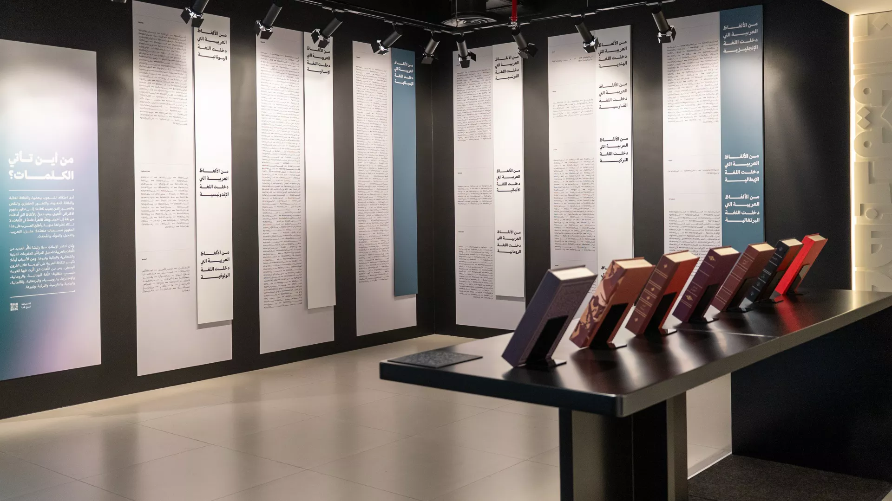
From the heart of Riyadh, we were greeted by the light of a unique, inspiring exhibition exploring the depths of the Arabic language, showcasing its deep roots, mature stages of growth, and vast reach, as well as the pride its people hold in it.The Arabic L... المصدر الرسمي: Visit Saudi.
تفاصيل الحضور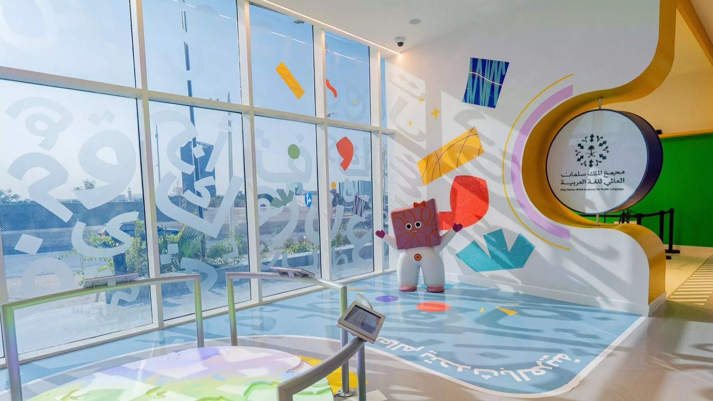
This exhibition is one of its kind in the Arab world to be developed by a language institution, focuses on developing children's linguistic awareness of the Arabic language. المصدر الرسمي: Visit Saudi.
تفاصيل الحضوربرنامج أو مبادرة ثقافية رسمية من تقويم وزارة الثقافة. المدة طويلة لذلك تحفظ كدليل مصدر ولا تنشر تلقائياً كفعالية لحظية. Film Business Accelerator ضمن ثقافة وفنون في السعودية. تبدأ الفعالية ١٩/٠١/٢٠٢٦، ١٢:٠٠ ص وتنتهي ٣١/١٢/٢٠٢٦، ١٢:٠٠ ص حسب البيانات المتاحة. تعرض الصفحة وقت الفعالية وموقعها ومصدرها وروابط التقويم والاتجاهات عند توفرها. المصدر: Ministry of Culture Commission Calendars.
تفاصيل الحضور
برنامج أو مبادرة ثقافية رسمية من تقويم وزارة الثقافة. المدة طويلة لذلك تحفظ كدليل مصدر ولا تنشر تلقائياً كفعالية لحظية. The Guidelines for Culture and Arts in the Public Realm ضمن ثقافة وفنون في السعودية. تبدأ الفعالية ٠٥/٠٢/٢٠٢٦، ١٢:٠٠ ص وتنتهي ٠٥/٠٢/٢٠٣٠، ١٢:٠٠ ص حسب البيانات المتاحة. تعرض الصفحة وقت الفعالية وموقعها ومصدرها وروابط التقويم والاتجاهات عند توفرها. المصدر: Ministry of Culture Commission Calendars.
تفاصيل الحضور